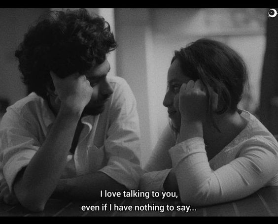

Bagian 4
Naivy, kita telah berbicara banyak hal dalam waktu yang masih singkat ini. Aku berharap kamu mau mengizinkan aku untuk terus mengenalmu. Izinkan aku untuk terus mengetahui dirimu lebih dalam. Aku ingin menjadi seseorang yang memahami perasaanmu. Aku ingin menjadi seseorang yang mendengarkan penjelasanmu, seseorang yang tetap merendahkan suaraku bahkan saat kita terlibat salah paham, seseorang yang dapat menjadi tempat yang aman untukmu mencurahkan berbagai hal. Aku ingin menjadi seseorang yang membuatmu lupa beratnya dunia yang kita hadapi. Aku ingin menjadi seseorang yang selalu mengingatkan kamu betapa hebatnya kamu. Aku tau aku tidak sempurna. Aku berbuat kesalahan beberapa waktu. Aku lepas kendali dalam beberapa momen. Aku menyebalkan dan membuat kepalamu pusing terkadang. Tetapi percayalah, semua yang aku inginkan adalah menggenggam tanganmu dan mengatakan semua baik-baik saja, aku ada di sampingmu, dan kita akan mengusahakan itu, mengusahakan menjadi orang-orang yang paling berbahagia di dunia.
Next